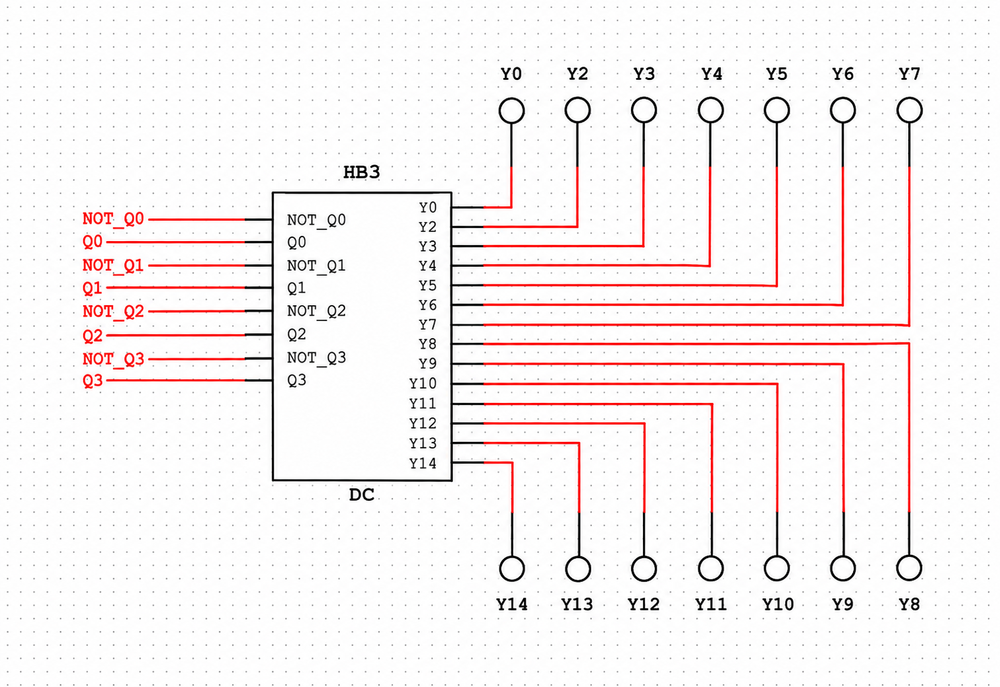
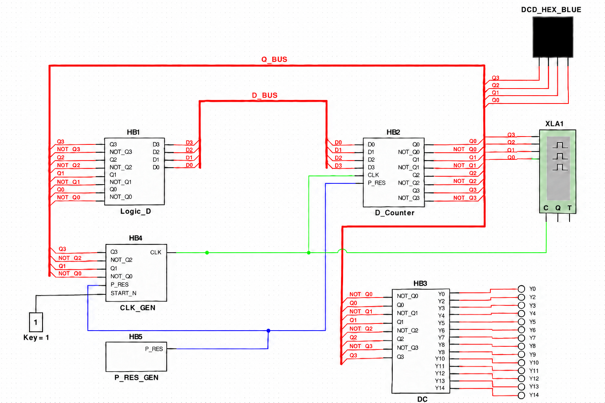

Подключение DC и общая схема
Сохранённый ответ от 25 сентября 2026 года. Картинки можно открыть в полном размере щелчком.
На фото написано DC1 — дешифратор. У тебя он уже собран и называется HB3 / DC. Кружки вокруг — индикаторы probes, такие же, как у тебя над счётчиком.
Для твоего варианта:
- Слева DC подключи к одноимённым выходам
Q0…Q3иNOT_Q0…NOT_Q3счётчика. - Справа поставь 14 отдельных индикаторов:
Y0,Y2…Y14. Можешь копировать уже имеющийся probe. - Например, при коде
Dдолжен горетьY13, при коде6—Y6.
Переделал оформление по твоему скриншоту. Используй эти финальные версии — в промежуточных картинках в чате были ошибки проводки:
DC крупно — куда подключить индикаторы

Общая схема — итоговый вид

На общей схеме зелёный — CLK, синий — P_RES, чёрный от переключателя — START_N. Красные толстые линии — шины: каждый сигнал подключай отдельным именованным отводом.
Картинки созданы через ImageGen по твоим снимкам; это иллюстрации подключения, не настоящие скриншоты работающей модели.